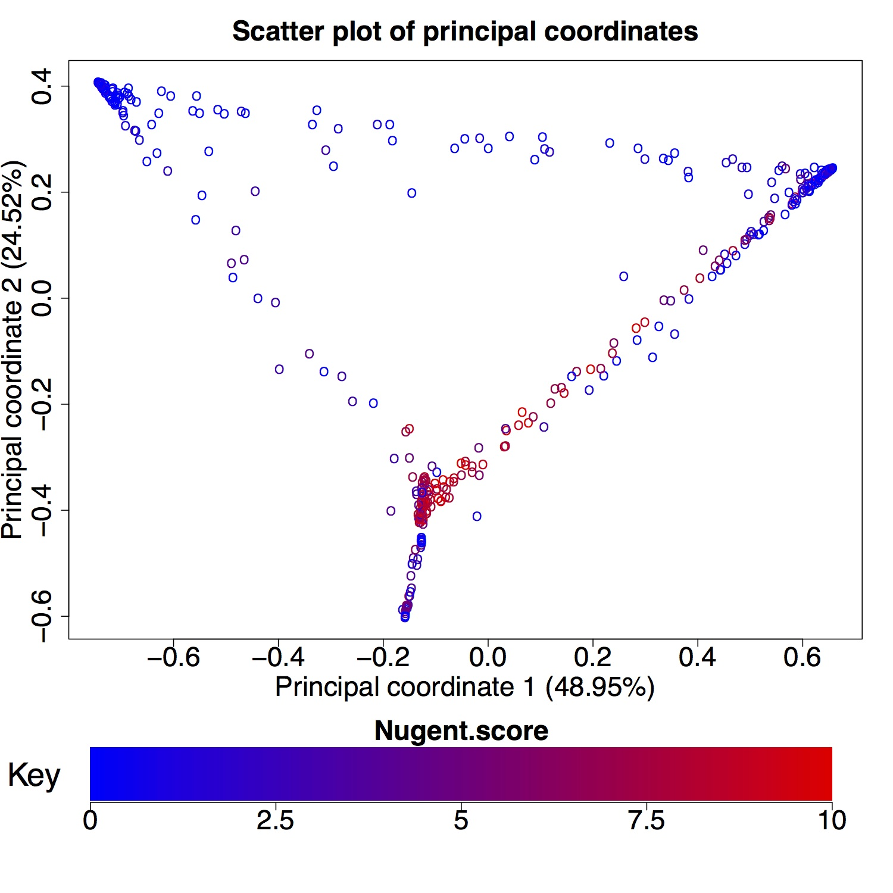

The PCoA panel displays a scatter plot of the samples using principal coordinate analysis (PCoA) to define point positions. PCoA is a technique for visualizing differences between samples. First, a distance is calculate for each pair of samples. This distance is a measure of sample differences based on taxa abundance. The distances can be used to place the samples in multidimensional space such that the distance between samples is proportional to sample similarity. The samples can be visualized by flattening the points into two dimensions. The flattening is done such that the first axis contains the most variation between sample points. The second axis contains as much of the remaining variation as possible. This continues until all variation is captured by the PC axes. Often the first two axes contain most of the variation between points. Seed calculates the principal coordinates using vegan's capscale function. Additionally, the percent variation explained by each principal coordinate is shown in parentheses. Any principal coordinate may be plotted on the X or Y axis by selecting the appropriate number in the sidebar.
The "color variable" makes it possible to view the distribution of the selected variable across the samples, effectively adding another dimension to the plot. There are three main options, each of which may be appropriate in different situations. The 'Unique' option generates a different color for each different value of the variable. This option works well up to about ten values. When there are many more values the selected colors are still unique, however, they become difficult to tell apart. The 'Gradient' option may be used when the color variable is continuous. This option selects colors from a gradient. This makes it easy to distinguish between low and high valued colors. The third option is to use color 'Categories'. This option breaks the color variable up into a user selected number of groups. These groups are then given unique colors.
PCoA plots are often used to identify groups of similar samples. They may also be used to determine if samples with similar composition share important characteristics. For example, in the Ravel et al. dataset, we can plot the first two PC axes and color the sample points by Nugent score. This may indicate several clusters of similar samples, one of which appears to include samples with high Nugent scores.
vegan::capscale - conduct constrained Principle Coordinate Analysis
grDevices::colorRampPalette - interpolate colors
grDevices::rainbow - create a vector of n contiguous colors
Jari Oksanen, F. Guillaume Blanchet, Roeland Kindt, Pierre Legendre, Peter R. Minchin, R. B. O'Hara, Gavin L. Simpson, Peter Solymos, M. Henry H. Stevens and Helene Wagner (2013). vegan: Community Ecology Package. R package version 2.0-10. http://CRAN.R-project.org/package=vegan